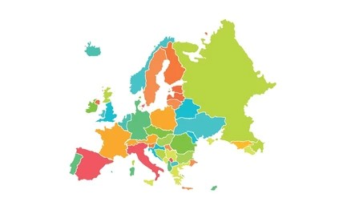

2000 yılından bu yana uluslararası karayolu taşımacılığında güvenilir çözüm ortağınız.
Şirketimiz, 2000 senesinin sonunda uzun yılların tecrübe ve birikimine sahip bir ekip ile araç yatırımını tamamlayarak uluslararası karayolu taşımacılığı faaliyetine başlamıştır.
Kurulduğu ilk günden bu yana butik çalışma anlayışını benimseyen firmamız, özellikle parsiyel taşımacılıkta maksimum kapasite kullanımını sağlayan çift katlı özel araç filosu ile hizmet vermektedir.
Taşımacılıkta kaliteyi sabit tutabilmek adına yalnızca FORA araçları kullanılmakta, kiralık organizasyonlara gidilmemektedir.
İthalat/ihracat gümrükleme, yükleme, boşaltma, aktarma, iç dağıtım ve ön taşıma gibi ek hizmetler ile uluslararası nakliye süreci uçtan uca yönetilmektedir.
Yıl Deneyim
Avrupa Ülkesi
Güvenilir Hizmet

Özellikle Almanya hattında güçlü acentelik bağları ile yerli ve yabancı müşterilerimizin tüm taleplerine hızlı ve güvenilir çözümler sunmaktayız.